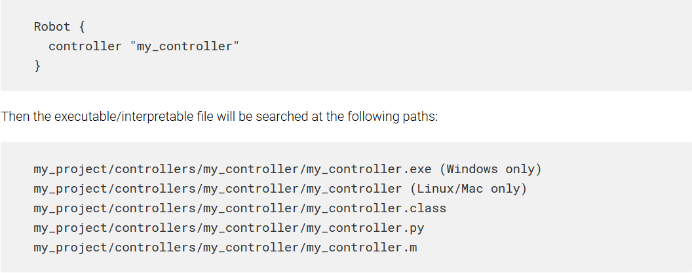

常見問題 <<
Previous 程式設計
教材來源:https://cyberbotics.com/doc/guide/programming
如何獲得機器人/物體的3D位置？
根據必須在普通控制器，Supervisor控制器還是物理插件中訪問此信息，有不同的功能。 下述所有功能將返回以米為單位的3D位置，並以全局（世界）坐標系表示。
顯然，也可以通過使用測距法或SLAM技術來估算機器人的位置。 這通常更現實，因為大多數機器人都沒有GPS，因此無法精確確定其位置。 您可以在Cyberbotics的機器人課程中找到有關里程表和SLAM技術的更多信息。
要在機器人的控制器代碼中獲取機器人的位置：在機器人上添加GPS節點，然後使用wb_robot_get_device，wb_gps_enable和wb_gps_get_values函數。 請注意，GPS的分辨率字段必須為0（默認值），否則結果會很嘈雜。 您可以在參考手冊中找到有關GPS節點和功能的更多信息。 請注意，GPS也可以放置在機器人的零件（手臂，腳等）上，以獲取該特定零件的世界/全局坐標。
1.要使用Supervisor API獲取任何變換（或派生）節點的3D位置：可以使用wb_supervisor_node_get_position函數。 請在參考手冊中查看此功能的說明。
2.要獲取位於“場景樹”的根節點（“場景樹”完全折疊時可見的節點）的任何“變換”（或派生）節點的3D位置，可以使用wb_supervisor_field_get_sf_vec3f函數。 這是一個例子。
Webots安裝中包含一個同時顯示GPS和Supervisor API技術的模擬示例，您只需要打開一個世界：“ WEBOTS_HOME / projects / samples / devices / worlds / gps.wbt”。
在物理插件中，可以使用ODE的dBodyGetPosition函數。 請注意，此函數返回實體重心的位置：這可能與實體的重心不同。 請在這裡找到ODE功能的說明。
如何獲得機器人/物體的線速度/角速度/速度？
Webots提供了幾種獲取機器人或物體的3D位置的功能（請參見上文）：通過獲取位置的一階導數，可以確定速度。 還有一些函數（請參見下文）可用於直接獲取速度：
要在機器人的控制器代碼中獲取機器人（或機器人部件）的角速度：將Gyro節點添加到機器人（或機器人部件），然後使用wb_robot_get_device，wb_gyro_enable和wb_gyro_get_values函數。 您可以在參考手冊中找到有關Gyro節點和功能的更多信息。
使用wb_supervisor_node_get_velocity函數可以檢索任何實體節點的線速度和角速度。 您可以在參考手冊中找到有關此功能的更多信息。
在物理插件中，可以使用ODE的dBodyGetLinearVel和dBodyAngularVel函數。 這些函數返回以米/秒為單位的線速度，或者以弧度/秒為單位的角速度。 請在此處找到ODE功能的說明。
如何重置機器人？
請參閱本節。
這是什麼意思：“找不到控制器{...}而是加載void控制器。”？
此消息意味著Webots既找不到可執行文件（例如.exe），也找不到解釋語言文件（例如.class，.py，.m）作為機器人的控制器程序運行。 實際上，Webots需要將每個控制器文件存儲在特定位置，以便能夠執行它。 請求的位置在當前Webots項目目錄的“ controllers”子目錄中。 “我的項目”。 在“ controllers”目錄中，每個控制器項目必須存儲在其自己的目錄中，該目錄的名稱必須與Robot的controller字段完全相同。 在該目錄內，可執行文件/可解釋文件也必須以Robot的controller字段命名（加上可能的擴展名）。 例如，如果機器人的控制器字段在“場景樹”中如下所示：

如果Webots在上面指定的路徑中找不到任何文件，則顯示有問題的錯誤消息。 因此，當您：
- 已將項目或源文件移動到與以上描述不對應的位置。
- 使用外部構建系統，例如 Visual Studio，未配置為在正確的位置生成可執行文件。
- 已將機器人的控制器字段更改為找不到可執行文件/可解釋文件的位置。
- 在“清理”控制器項目之後，已經“重新加載”了世界。
這是什麼意思：“警告：API函數調用中的WbDeviceTag無效”？
WbDeviceTag是用於在Webot中標識模擬設備的抽象引用（或句柄）。 必須從wb_robot_get_device函數獲取任何WbDeviceTag。 然後，它用於在各種Webots函數調用中指定設備。 當傳遞給Webots函數的WbDeviceTag似乎與已知設備不符時，Webots發出此警告。 發生這種情況主要有以下三個原因：
1.WbDeviceTag為0，因此無效，因為wb_robot_get_device函數調用未找到它。 實際上，如果無法在機械手中找到具有指定名稱的設備，則wb_robot_get_device函數將返回0。 請注意，在wb_robot_get_device函數的參數中指定的名稱必須對應於設備的名稱字段，而不是VRML97 DEF名稱！ 2.您的控制器代碼混合了兩種類型的WbDeviceTag，例如，因為它在wb_distance_sensor_ *函數中使用了Camera的WbDeviceTag。 這是一個錯誤的示例：

1.WbDeviceTag也可能無效，這是因為它在通過wb_robot_get_device函數調用進行初始化之前使用，或者根本沒有初始化，或者由於控制器代碼中的編程錯誤而損壞了。 這是一個例子：
.png)
是否可以向機器人施加（用戶指定的）力？
是。 您需要使用物理插件來應用用戶指定的力（或扭矩）。 然後，您可以使用菜單項添加嚮導：嚮導>新物理插件。 添加插件後，必須使用Webots編輯器對其進行編譯。 然後，您必須將該插件與您的仿真世界關聯。 這可以通過在“場景樹”中編輯WorldInfo.physics字段來完成。 然後，您必須修改插件代碼，例如添加力量。 這是一個例子：
.png)
在參考手冊中有關於插件功能的更多信息。 有關ODE功能的其他信息，請參見此處。 您可能還想研究與Webots一起分發的此示例：
.png)
在此示例中，物理插件將用戶計算出的力添加到機器人主體，以模擬阿基米德和流體動力阻力。
如何在3D窗口中繪製？
根據您要繪製的內容，有不同的技術：
1.如果只想添加一些2D文本，則可以使用以下功能來實現：wb_supervisor_set_label。 這將使您可以將2d疊加文字放在3d模擬的前面。 請查找Supervisor API文檔。
2.如果要在3d圖形前面添加一個小的子窗口，則應考慮使用“顯示”節點。 這將允許您執行2d矢量圖形和文本。 例如，這對於顯示已處理的攝像機圖像也很有用。 請查找“顯示”節點文檔。
3.如果要在主窗口中添加3d圖形，可以使用Supervisor API來完成。 Supervisor API可用於創建新節點-這意味著您可以創建IndexedFaceSet或IndexedLineSet並相應地調整頂點位置或索引以創建和更新希望在3D場景中繪製的形狀。
這是什麼意思：“控制器{...}使用的時間步長不是WorldInfo.basicTimeStep！的倍數！”？
Webots允許獨立指定控制步驟和模擬步驟。 控制步驟是傳遞給wb_robot_step函數的參數，它指定機器人控制步驟的持續時間。 模擬步驟是WorldInfo.basicTimeStep字段中指定的值，它指定物理模擬積分步驟的持續時間，換句話說：必須重新計算對象運動的頻率。 模擬步驟的執行是一項原子操作：不能中斷。 因此，必須在兩個仿真步驟之間進行傳感器測量或電機驅動。 因此，每個wb_robot_step函數調用指定的控制步驟必須是模擬步驟的倍數。 如果不是這種情況，則會顯示此錯誤消息。 因此，例如，如果WorldInfo.basicTimeStep為16（ms），則傳遞給wb_robot_step函數的控制步驟參數可以為16、32、48、64、80、128、1024等。
如何檢測碰撞？
Webots會自動檢測碰撞並在必要時施加接觸力。 碰撞檢測機制基於boundingObjects中指定的形狀。 現在，如果要以編程方式檢測碰撞，可以使用以下幾種方法：
- 在控制器代碼中：您可以通過在機器人身體周圍或可能發生碰撞的地方使用TouchSensors來檢測碰撞。 您可以使用類型為“保險槓”的TouchSensors，無論是否發生碰撞，它們都會返回布爾狀態1或0。 實際上，“碰碰” TouchSensor在其boundingObject與另一個boundingObject相交時將返回1，否則返回0。
- 在主管代碼中：您可以通過使用wb_supervisor_field_get_ *函數跟踪機器人的位置來檢測衝突。 這是一個簡單的示例，假設機器人是圓柱形的並且在xz平面中移動。
.png)
- 在物理插件中：您可以替換或擴展Webots碰撞檢測機制。 這是一項高級技術，需要了解ODE（開放動力引擎）API。 您的碰撞檢測機制必須在webots_physics_collide函數中實現。 該功能在《參考手冊》的“物理插件”一章中進行了介紹。
為什麼我的相機窗口保持黑色？
僅在完成以下所有步驟之後，攝像機窗口的內容才會出現：
1.指定了攝像機的名稱字段。
2.通過使用帶有相應攝像機名稱的wb_robot_get_device函數找到了“攝像機”節點的 WbDeviceTag。
3.使用wb_camera_enable函數和r毫秒的刷新率啟用了Camera。
4.調用了一個或幾個wb_robot_step函數（或等效函數），其覆蓋時間至少為r毫秒。
5.調用了wb_camera_get_image函數。
常見問題 <<
Previous